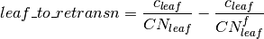

25. Crops and Irrigation¶
25.1. Summary of CLM5.0 updates relative to the CLM4.5¶
We describe here the complete crop and irrigation parameterizations that appear in CLM5.0. Corresponding information for CLM4.5 appeared on the CLM4.5 web site in a pdf document independent of the CLM4.5 Technical Note (Oleson et al. 2010a). The CLM4.0 crop model description also appeared in Levis et al. (2012).
CLM5.0 includes the following updates to the CROP option, where CROP refers to the interactive crop management model and is included by default with the BGC configuration:
- New crop functional types
- All crop areas are actively managed
- Fertilization rates updated based on crop type and geographic region
- Irrigation updates
- Phenological triggers vary by latitude for some crop types
- Ability to simulate transient crop management
- Adjustments to allocation and phenological parameters
- Crops reaching their maximum LAI triggers the grain fill phase
- Grain C and N pools are included in a 1-year product pool
- C for annual crop seeding comes from the grain C pool
- Initial seed C for planting is increased from 1 to 3 g C/m^2
These updates appear in detail in the sections below. Many also appear in Levis et al. (2016).
25.2. The crop model¶
25.2.1. Introduction¶
Groups developing Earth System Models generally account for the human footprint on the landscape in simulations of historical and future climates. Traditionally we have represented this footprint with natural vegetation types and particularly grasses because they resemble many common crops. Most modeling efforts have not incorporated more explicit representations of land management such as crop type, planting, harvesting, tillage, fertilization, and irrigation, because global scale datasets of these factors have lagged behind vegetation mapping. As this begins to change, we increasingly find models that will simulate the biogeophysical and biogeochemical effects not only of natural but also human-managed land cover.
AgroIBIS is a state-of-the-art land surface model with options to simulate dynamic vegetation (Kucharik et al. 2000) and interactive crop management (Kucharik and Brye 2003). The interactive crop management parameterizations from AgroIBIS (March 2003 version) were coupled as a proof-of-concept to the Community Land Model version 3 [CLM3.0, Oleson et al. (2004)] (not published), then coupled to the CLM3.5 (Levis et al. 2009) and later released to the community with CLM4CN (Levis et al. 2012) and CLM4.5.
With interactive crop management and, therefore, a more accurate representation of agricultural landscapes, we hope to improve the CLM’s simulated biogeophysics and biogeochemistry. These advances may improve fully coupled simulations with the Community Earth System Model (CESM), while helping human societies answer questions about changing food, energy, and water resources in response to climate, environmental, land use, and land management change (e.g., Kucharik and Brye 2003; Lobell et al. 2006).
25.2.2. Crop plant functional types¶
CLM’s default list of plant functional types (pfts) includes an unmanaged crop (Table 2.1) treated as a second C3 grass. The unmanaged crop has grid cell coverage assigned from satellite data, as do all natural pfts when CLM’s dynamic vegetation model (CNDV; Castillo et al. 2012) is not active.
The new crop pfts used in the CLM get grid cell coverage from the present-day crop dataset of Portmann et al. (2010). We assign these managed crops in the proportions given by Portmann et al. (2010) without exceeding the area previously assigned to the unmanaged crop. The unmanaged crop continues to occupy any of its original area that remains and continues to be handled just by the carbon/nitrogen cycling part of the CLM (i.e., CN). The managed crop types (corn, soybean, and temperate cereals) were chosen based on the availability of corresponding algorithms in AgroIBIS. Temperate cereals include wheat, barley, and rye here. We treat all temperate cereals as summer crops (like spring wheat, for example) at this time. We may introduce winter cereals (such as winter wheat) in a future version of the model.
To allow crops to coexist with natural vegetation in a grid cell and be treated by separate models (i.e., CLM4.5CNcrop versus CLM4.5CNDV), we separate the vegetated land unit into a naturally vegetated land unit and a human managed land unit. Plant functional types in the naturally vegetated land unit share one soil column and compete for water (default CLM setting). Managed crop PFTs in the human managed land unit do not share soil columns and thus permit for differences in land management between crops.
25.2.3. Phenology¶
CLM4.5CN includes evergreen, seasonally deciduous (responding to changes in day length), and stress deciduous (responding to changes in temperature and/or soil moisture) phenology algorithms (Chapter 14). In CLM4.5CNcrop we have added the AgroIBIS crop phenology algorithm, consisting of three distinct phases.
Phase 1 starts at planting and ends with leaf emergence, phase 2 continues from leaf emergence to the beginning of grain fill, and phase 3 starts from the beginning of grain fill and ends with physiological maturity and harvest.
25.2.3.1. Planting¶
Corn and temperate cereals must meet the following requirements between April 1st and June 14th for planting in the northern hemisphere (NH):
(1)¶
where  is the 10-day running mean of
is the 10-day running mean of  , (the simulated 2-m air
temperature at every model time step) and
, (the simulated 2-m air
temperature at every model time step) and  is
the 10-day running mean of
is
the 10-day running mean of  (the daily minimum of
.
(the daily minimum of
.  and
and  are crop-specific coldest planting temperatures
(Table 20.1),
are crop-specific coldest planting temperatures
(Table 20.1),  is the 20-year running mean growing
degree-days (units are degree-days or o days) tracked
from April through September (NH) base 8o C with
maximum daily increments of 30o days (see Eq.XXX ), and
is the 20-year running mean growing
degree-days (units are degree-days or o days) tracked
from April through September (NH) base 8o C with
maximum daily increments of 30o days (see Eq.XXX ), and
 is the minimum growing degree day requirement
(Table 20.1). Soy must meet the same requirements but between May
1st and June 14th for planting. If the
requirements in Eq. are not met by June 14th, then corn,
soybean, and temperate cereals are still planted on June
15th as long as
is the minimum growing degree day requirement
(Table 20.1). Soy must meet the same requirements but between May
1st and June 14th for planting. If the
requirements in Eq. are not met by June 14th, then corn,
soybean, and temperate cereals are still planted on June
15th as long as  . In
the southern hemisphere (SH) the NH requirements apply 6 months later.
. In
the southern hemisphere (SH) the NH requirements apply 6 months later.
does not change as quickly as and  , so
it determines whether the crop can be planted in a grid cell, while the
two faster-changing variables determine when the crop may be planted.
, so
it determines whether the crop can be planted in a grid cell, while the
two faster-changing variables determine when the crop may be planted.
At planting, each crop is assigned 1 g leaf C m-2 pft
column area to be transferred to the leaves upon leaf emergence. An
equivalent amount of seed leaf N is assigned given the pft’s C to N
ratio for leaves ( ). (This differs from AgroIBIS,
which uses a seed leaf area index instead of seed C.)
). (This differs from AgroIBIS,
which uses a seed leaf area index instead of seed C.)
At planting, the model updates the average growing degree-days necessary
for the crop to reach vegetative and physiological maturity,
 , according to the following AgroIBIS rules:
, according to the following AgroIBIS rules:
(2)¶
where  is the 20-year running mean growing
degree-days tracked from April through September (NH) base
10
is the 20-year running mean growing
degree-days tracked from April through September (NH) base
10 C with maximum daily increments of
30days. Eq. shows how we calculate
C with maximum daily increments of
30days. Eq. shows how we calculate
 , , and :
, , and :
(3)¶
where, if -  takes on values
outside the above ranges, then it equals the minimum or maximum value in
the range. Also equals 273.15 K,
has units of K, and GDD has units of odays.
takes on values
outside the above ranges, then it equals the minimum or maximum value in
the range. Also equals 273.15 K,
has units of K, and GDD has units of odays.
25.2.3.2. Leaf emergence¶
According to AgroIBIS, leaves may emerge when the growing degree-days of
soil temperature to 0.05 m depth tracked since planting
( ) reaches 3 to 5% of
(Table 20.1). is base 8, 0, and
10C for corn, soybean, and temperate cereals.
Leaf onset, as defined in the CN part of the model, occurs in the first
time step of phase 2, at which moment all seed C is transferred to leaf
C. Subsequently, the leaf area index generally increases and reaches
a maximum value during phase 2.
) reaches 3 to 5% of
(Table 20.1). is base 8, 0, and
10C for corn, soybean, and temperate cereals.
Leaf onset, as defined in the CN part of the model, occurs in the first
time step of phase 2, at which moment all seed C is transferred to leaf
C. Subsequently, the leaf area index generally increases and reaches
a maximum value during phase 2.
25.2.3.3. Grain fill¶
Phase 3 begins in a similar way to phase 2. A variable tracked since
planting like but for 2-m air temperature,
 , must reach a heat unit threshold, h,
of 40 to 70% of (Table 20.1). For corn the
percentage itself is an empirical function of
(not shown). In phase 3, the leaf area index begins to decline in
response to a background litterfall rate calculated as the inverse of
leaf longevity for the pft as done in the CN part of the model.
, must reach a heat unit threshold, h,
of 40 to 70% of (Table 20.1). For corn the
percentage itself is an empirical function of
(not shown). In phase 3, the leaf area index begins to decline in
response to a background litterfall rate calculated as the inverse of
leaf longevity for the pft as done in the CN part of the model.
25.2.3.4. Harvest¶
Harvest is assumed to occur as soon as the crop reaches maturity. When
reaches 100% of or
the number of days past planting reaches a crop-specific maximum (Table
20.1), then the crop is harvested. Harvest occurs in one time step using
CN’s leaf offset algorithm. New variables track the flow of grain C and
N to food and of live stem C and N to litter. Currently, food C and N
are routed directly to litter using the labile, cellulose, and lignin
fractions for leaves. The same fractions for leaves are used for the
flow of live stem C and N to litter for corn, soybean, and temperate
cereals. This is in contrast to the approach for unmanaged PFTs which
puts live stem C and N to dead stems first, rather than to litter.
25.2.4. Allocation¶
Allocation responds to the same phases as phenology (section 20.2.3). Simulated C assimilation begins every year upon leaf emergence in phase 2 and ends with harvest at the end of phase 3; therefore, so does the allocation of such C to the crop’s leaf, live stem, fine root, and reproductive pools.
25.2.4.1. Leaf emergence to grain fill¶
During phase 2, the allocation coefficients (fraction of available C) to each C pool are defined as:
(4)¶
where  ,
,  , and
, and
 are initial and final values of these
coefficients (Table 20.2), and h is a heat unit threshold defined in
section 20.2.3. At a crop-specific maximum leaf area index,
are initial and final values of these
coefficients (Table 20.2), and h is a heat unit threshold defined in
section 20.2.3. At a crop-specific maximum leaf area index,
 (Table 20.2), carbon allocation is directed
exclusively to the fine roots.
(Table 20.2), carbon allocation is directed
exclusively to the fine roots.
25.2.4.2. Grain fill to harvest¶
The calculation of  remains the same from phase 2 to
phase 3. Other allocation coefficients change to:
remains the same from phase 2 to
phase 3. Other allocation coefficients change to:
(5)¶![\begin{array}{l}
{a_{leaf} =a_{leaf}^{i,3} {\rm \; \; \; when\; \; \; }a_{leaf}^{i,3} \le a_{leaf}^{f} {\rm \; \; \; else...}} \\
{a_{leaf} =a_{leaf} \left(1-\frac{GDD_{T_{{\rm 2m}} } -h}{GDD_{{\rm mat}} d_{L} -h} \right)^{d_{alloc}^{leaf} } \ge a_{leaf}^{f} {\rm \; \; \; where\; \; \; }\frac{GDD_{T_{{\rm 2m}} } -h}{GDD_{{\rm mat}} d_{L} -h} \le 1} \\
{} \\
{a_{livestem} =a_{livestem}^{i,3} {\rm \; \; \; when\; \; \; }a_{livestem}^{i,3} \le a_{livestem}^{f} {\rm \; \; \; else...}} \\
{a_{livestem} =a_{livestem} \left(1-\frac{GDD_{T_{{\rm 2m}} } -h}{GDD_{{\rm mat}} d_{L} -h} \right)^{d_{alloc}^{stem} } \ge a_{livestem}^{f} {\rm \; \; \; where\; \; \; }\frac{GDD_{T_{{\rm 2m}} } -h}{GDD_{{\rm mat}} d_{L} -h} \le 1} \\
{} \\
{a_{repr} =1-a_{froot} -a_{livestem} -a_{leaf} }
\end{array}](../../_images/math/f739f59131313a5cd55f8395f97307a322ede605.png)
where  and
and  (initial
values) equal the last
(initial
values) equal the last  and
and  calculated in phase 2,
calculated in phase 2,  ,
,  and
and
 are leaf area index and leaf and stem
allocation decline factors, and
are leaf area index and leaf and stem
allocation decline factors, and  and
and
 are final values of these allocation
coefficients (Table 20.2).
are final values of these allocation
coefficients (Table 20.2).
25.2.5. General comments¶
C and N accounting now includes new pools and fluxes pertaining to live stems and reproductive tissues. For example, the calculations of growth respiration, above ground net primary production, litter fall, and displayed vegetation all now account for reproductive C.
We track allocation to reproductive C separately from CN’s allocation to
other C pools but within the CN framework. CN uses
 and
and  to calculate C and
N allometry and plant N demand.
to calculate C and
N allometry and plant N demand.
Stem area index (S) is equal to 0.1L for corn and 0.2L for other crops, as in AgroIBIS, where L is the leaf area index. All live C and N pools go to 0 after crop harvest, but the S is kept at 0.25 to simulate a post-harvest “stubble” on the ground.
Crop heights at the top and bottom of the canopy,  and
and  (m), come from the AgroIBIS formulation:
(m), come from the AgroIBIS formulation:
(6)¶
The CN part of the model keeps track of a term representing excess maintenance respiration that for perennial pfts or pfts with C storage may be extracted from later gross primary production. Later extraction cannot continue to happen after harvest for annual crops, so at harvest we turn the excess respiration pool into a flux that extracts CO2 directly from the atmosphere. This way we eliminate any excess maintenance respiration remaining at harvest as if such respiration had not taken place.
In the list of plant physiological and other parameters used by the CLM, we started the managed crops with the existing values assigned to the unmanaged C3 crop. Then we changed the following parameters to distinguish corn, soybean, and temperate cereals from the unmanaged C3 crop and from each other:
- Growth respiration coefficient from 0.30 to the AgroIBIS value of 0.25.
- Fraction of leaf N in the Rubisco enzyme from 0.1 to 0.2 g N Rubisco g-1 N leaf for temperate cereals to increase productivity (not chosen based on AgroIBIS).
- Fraction of current photosynthesis displayed as growth changed from 0.5 to 1 (not chosen based on AgroIBIS).
- CLM4.5CN curve for the effect of temperature on photosynthesis instead of crop-specific curves from AgroIBIS.
- Quantum efficiency at 25oC,
 , from 0.06 to 0.04 µmol CO2 µmol-1 photon for C4 crops (corn and unmanaged C4
crop), using CLM4.5CN’s C4 grass value.
, from 0.06 to 0.04 µmol CO2 µmol-1 photon for C4 crops (corn and unmanaged C4
crop), using CLM4.5CN’s C4 grass value. - Slope, m, of conductance-to-photosynthesis relationship from 9 to 4 for C4 crops as in AgroIBIS.
- Specific leaf areas, SLA, to the AgroIBIS values (Table 20.1).
- Leaf orientation,
 , to the AgroIBIS values (Table 20.1).
, to the AgroIBIS values (Table 20.1). - Soil moisture photosynthesis limitation factor,
 , for soybeans multiplied as in AgroIBIS by 1.25
for increased drought tolerance.
, for soybeans multiplied as in AgroIBIS by 1.25
for increased drought tolerance.
Table 20.1. Crop plant functional types (pfts) in CLM4.5CNcrop and their parameters relating to phenology and morphology. Numbers in the first column correspond to the list of pfts in Table 2.1.
| Phenological Type |  K
K |
K |
 ºdays
ºdays |
ºdays |
Phase 2
% |
Phase 3
% |
Harvest: days past planting |  m
m |
SLA m2leaf g-1C |
index |
||
|---|---|---|---|---|---|---|---|---|---|---|---|---|
| C3 unmanaged rainfed crop | 0.03 | -0.30 | ||||||||||
| C3 unmanaged irrigated crop | 0.03 | -0.30 | ||||||||||
| Rainfed Corn (also known as Maize) | 950-1850 | 3 | 55-65 |  165 165 |
2.50 | 0.05 | -0.50 | |||||
| Irrigated Corn (also known as Maize) | 950-1850 | 3 | 55-65 | 165 |
2.50 | 0.05 | -0.50 | |||||
| Rainfed Temperate Cereals | 1700 |
5 | 60 | 150 |
1.20 | 0.07 | 0.65 | |||||
| Irrigated Temperate Cereals | 1700 |
5 | 60 | 150 |
1.20 | 0.07 | 0.65 | |||||
| Rainfed Winter cereals (place holder) | 1900 | 5 | 40 | 265 |
1.20 | 0.07 | 0.65 | |||||
| Irrigated Winter cereals (place holder) | 1900 | 5 | 40 | 265 |
1.20 | 0.07 | 0.65 | |||||
| Rainfed Soybean | 1700 |
3 | 70 | 150 |
0.75 | 0.07 | -0.50 | |||||
| Irrigated Soybean | 1700 |
3 | 70 | 150 |
0.75 | 0.07 | -0.50 |
Notes: and are coldest
planting temperatures but for winter cereals
is a warmest planting temperature. is the lowest
(for planting) 20-year running mean growing degree-days base 0ºC (winter
cereals) or 8 (other crops) tracked from April to September (NH).
is a crop’s 20-year running mean growing
degree-days needed for vegetative and physiological maturity. Harvest
occurs at 100% or when the days past planting
reach the number in the 10th column. Crop growth phases
are described in the text. is the maximum
top-of-canopy height of a crop, SLA is specific leaf area, and leaf
orientation index, , equals -1 for vertical, 0 for
random, and 1 for horizontal leaf orientation.
Table 20.2. Crop pfts in CLM4.5CNcrop and their parameters relating to allocation. Numbers in the first column correspond to the list of pfts in Table 2.1.
|
|
|
|
|
|
|
|
|
||
| fraction | m2 m-2 | |||||||||
| Rainfed Corn (also referred to as Maize) | 0.800 | 5 | 0.400 | 0.050 | 0.000 | 0.000 | 1.05 | 2 | 5 | |
| Irrigated Corn (also referred to as Maize) | 0.800 | 5 | 0.400 | 0.050 | 0.000 | 0.000 | 1.05 | 2 | 5 | |
| Rainfed Temperate Cereals | 0.750 | 7 | 0.300 | 0.000 | 0.000 | 0.050 | 1.05 | 1 | 3 | |
| Irrigated Temperate Cereals | 0.750 | 7 | 0.300 | 0.000 | 0.000 | 0.050 | 1.05 | 1 | 3 | |
| Rainfed Winter cereals (place holder) | 0.425 | 7 | 0.300 | 0.000 | 0.000 | 0.050 | 1.05 | 1 | 3 | |
| Irrigated Winter cereals (place holder) | 0.425 | 7 | 0.300 | 0.000 | 0.000 | 0.050 | 1.05 | 1 | 3 | |
| Rainfed Soybean | 0.850 | 6 | 0.500 | 0.200 | 0.000 | 0.300 | 1.05 | 5 | 2 | |
| Irrigated Soybean | 0.850 | 6 | 0.500 | 0.200 | 0.000 | 0.300 | 1.05 | 5 | 2 |
Notes: Crop growth phases and corresponding variables are described in the text
25.3. The irrigation model¶
The CLM includes the option to irrigate cropland areas that are equipped for irrigation. The application of irrigation responds dynamically to the soil moisture conditions simulated by the CLM. This irrigation algorithm is based loosely on the implementation of Ozdogan et al. (2010).
When irrigation is enabled, the crop areas of each grid cell are divided into irrigated and rainfed fractions according to a dataset of areas equipped for irrigation (Portmann et al. 2010). Irrigated and rainfed crops are placed on separate soil columns, so that irrigation is only applied to the soil beneath irrigated crops.
In irrigated croplands, a check is made once per day to determine
whether irrigation is required on that day. This check is made in the
first time step after 6 AM local time. Irrigation is required if crop
leaf area  0, and the available soil water is below a specified
threshold.
0, and the available soil water is below a specified
threshold.
The soil moisture deficit  is
is
(7)¶
where  is the irrigation moisture threshold (mm) and
is the irrigation moisture threshold (mm) and
 is the available moisture (mm). The moisture threshold
is
is the available moisture (mm). The moisture threshold
is
(8)¶
where  is the irrigation target soil moisture (mm)
is the irrigation target soil moisture (mm)
(9)¶
 is the wilting point soil moisture (mm)
is the wilting point soil moisture (mm)
(10)¶
and  is a tuning parameter. The available moisture in
the soil is
is a tuning parameter. The available moisture in
the soil is
(11)¶
 is the index of the soil layer corresponding to a specified
depth
is the index of the soil layer corresponding to a specified
depth  (Table 25.1) and
(Table 25.1) and
 is the thickness of the soil layer (section
2.2).
is the thickness of the soil layer (section
2.2).  is the
volumetric soil moisture in layer
is the
volumetric soil moisture in layer  (section 7.3).
(section 7.3).
 and
and
 are the target and wilting point volumetric
soil moisture values, respectively, and are determined by inverting
(40) using soil matric
potential parameters
are the target and wilting point volumetric
soil moisture values, respectively, and are determined by inverting
(40) using soil matric
potential parameters  and
and  (Table 25.1). After the soil moisture deficit
is calculated, irrigation in an amount equal to
(Table 25.1). After the soil moisture deficit
is calculated, irrigation in an amount equal to
 (mm/s) is applied uniformly over
the irrigation period
(mm/s) is applied uniformly over
the irrigation period  (s). Irrigation water is applied
directly to the ground surface, bypassing canopy interception (i.e.,
added to
(s). Irrigation water is applied
directly to the ground surface, bypassing canopy interception (i.e.,
added to  : section 7.1).
: section 7.1).
To conserve mass, irrigation is removed from river water storage (Chapter 11). When river water storage is inadequate to meet irrigation demand, there are two options: 1) the additional water can be removed from the ocean model, or 2) the irrigation demand can be reduced such that river water storage is maintained above a specified threshold.
| Parameter | |
|---|---|
|
1.0 |
| (m) |
0.6 |
| (mm) |
-3400 |
| (mm) |
-150000 |
25.4. The details about what is new in CLM4.5¶
25.4.1. Interactive irrigation for corn, temperate cereals, and soybean¶
CLM4.0 included interactive irrigation only for the generic C3 crops, i.e. plant functional types (pfts) 15 (rainfed) and 16 (irrigated) in the CLM list of pfts and not for the additional crops of the interactive crop management model (CROP). Irrigation and CROP were mutually exclusive in CLM4.0.
In CLM4.5 we have reversed this situation. Now the irrigation model can be used only while running with CROP. To accomplish this we downloaded data of percent irrigated and percent rainfed corn, soybean, and temperate cereals (wheat, barley, and rye) (Portmann et al. 2010), available online from
ftp://ftp.rz.uni-frankfurt.de/pub/uni-frankfurt/physische_geographie/hydrologie/public/data/MIRCA2000/harvested_area_grids.
We embedded this data in CLM’s high-resolution pft data for use with the tool mksurfdat to generate surface datasets at any desired resolution. Now this data includes percent cover for 24 pfts:
1-16 as in the standard list of pfts, plus six more:
17 corn
18 irrigated_corn
19 spring_temperate_cereal
20 irrigated_spring_temperate_cereal
21 winter_temperate_cereal
22 irrigated_winter_temperate_cereal
23 soybean
24 irrigated_soybean
We intend surface datasets with 24 pfts only for CROP simulations with or without irrigation. In simulations without irrigation, the rainfed and irrigated crops merge into just rainfed crops at run time. Surface datasets with 16 pfts can be used for all other CLM simulations.
25.4.2. Interactive fertilization¶
CLM adds nitrogen directly to the soil mineral nitrogen pool to meet crop nitrogen demands. CLM’s separate crop land unit ensures that natural vegetation will not access the fertilizer applied to crops. Fertilizer amounts are obtained from the Agro-IBIS model (Kucharik and Brye 2003), but can be modified in CLM’s pft-physiology input dataset. Fertilizer is reported in g N/m2 by plant functional type. Total nitrogen fertilizer amounts are 150 g N/m2 for maize, 80 g N/m2 for temperate cereals, and 25 g N/m2 for soybean, representative of central U.S. annual fertilizer application amounts. Since CLM’s denitrification rate is high and results in a 50% loss of the unused available nitrogen each day, fertilizer is applied slowly to minimize the loss and maximize plant uptake. Fertilizer application begins during the emergence phase of crop development and continues for 20 days, which helps reduce large losses of nitrogen from leaching and denitrification during the early stage of crop development. The 20-day period is chosen as an optimization to limit fertilizer application to the emergence stage. A fertilizer counter in seconds, f, is set as soon as the onset growth for crops initiates:
f = n * 86400 [20.9)]
where n is set to 20 fertilizer application days. When the crop enters phase 2 (leaf emergence to the beginning of grain fill) of its growth cycle, fertilizer application begins by initializing fertilizer amount to the total fertilizer divided by the initialized f. Fertilizer is applied and f is decremented each time step until a zero balance on the counter is reached.
The crop fertilization scheme was developed in versions of the CLM prior to CLM4.5. In CLM4.5, crops with fertilization may be simulated over productive.
25.4.3. Biological nitrogen fixation for soybeans¶
Nitrogen fixation by soybeans is similar to that in the SWAT model (Neitsch et al. 2005) and depends on soil moisture, nitrogen availability, and growth stage. Soybean fixation is calculated only for unmet nitrogen demand; if soil nitrogen meets soybean demand, there will be no fixation during the time step. Soybean fixation is determined by
(12)¶
where  is the balance of nitrogen needed
to reach potential growth that cannot be supplied from the soil mineral
nitrogen pool, fxw is the soil water factor, fxn is the soil
nitrogen factor, and fxg is the growth stage factor calculated by
is the balance of nitrogen needed
to reach potential growth that cannot be supplied from the soil mineral
nitrogen pool, fxw is the soil water factor, fxn is the soil
nitrogen factor, and fxg is the growth stage factor calculated by
(13)¶
(14)¶
(15)¶
where wf is the soil water content as a fraction of the water holding
capacity for the top 0.05 m, sminn is the total nitrogen in the soil
pool (g/m:sup:2), and  is the fraction of
growing degree-days accumulated during the growing season.
is the fraction of
growing degree-days accumulated during the growing season.
 is added directly to the soil mineral nitrogen
pool for use that time step. Nitrogen fixation occurs after the plant
has accumulated 15% and before
75% , so before grain fill begins.
is added directly to the soil mineral nitrogen
pool for use that time step. Nitrogen fixation occurs after the plant
has accumulated 15% and before
75% , so before grain fill begins.
25.4.4. Modified C:N ratios for crops¶
Typically, C:N ratios in plant tissue vary throughout the growing season and tend to be lower during early growth stages and higher in later growth stages. In order to account for this change, two sets of C:N ratios are established in CLM for the leaf, stem, and fine root of crops. This modified C:N ratio approach accounts for the nitrogen retranslocation that occurs during phase 3 of crop growth. Leaf and stem (and root for temperate cereals) C:N ratios for phases 1 and 2 are lower than measurements (Table 20.3) to allow excess nitrogen storage in plant tissue. During grain fill (phase 3) of the crop growth cycle, the nitrogen in the plant tissues is moved to a storage pool to fulfill nitrogen demands of organ (reproductive pool) development, such that the resulting C:N ratio of the plant tissue is reflective of measurements at harvest. All C:N ratios were determined by calibration process, through comparisons of model output versus observations of plant carbon throughout the growth season.
25.4.5. Nitrogen retranslocation for crops¶
Nitrogen retranslocation in crops occurs when nitrogen that was used for tissue growth of leaves, stems, and fine roots during the early growth season is remobilized and used for grain development (Pollmer et al. 1979; Crawford et al. 1982; Simpson et al. 1983; Ta and Weiland 1992; Barbottin et al. 2005; Gallais et al. 2006, 2007). Nitrogen allocation for crops follows that of natural vegetation, is supplied in CLM by the soil mineral nitrogen pool, and depends on C:N ratios for leaves, stems, roots, and organs. Nitrogen demand during organ development is fulfilled through retranslocation from leaves, stems, and roots. Nitrogen retranslocation is initiated at the beginning of the grain fill stage for corn and temperate cereals, but not until after LAI decline in soybean. Nitrogen stored in the leaf and stem is moved into a storage retranslocation pool. For temperate cereals, nitrogen in roots is also released into the retranslocation storage pool. The quantity of nitrogen mobilized depends on the C:N ratio of the plant tissue, and is calculated as
(16)¶
(17)¶
(18)¶
where  ,
,  , and
, and  is the carbon in the plant leaf, stem, and fine
root, respectively, ,
is the carbon in the plant leaf, stem, and fine
root, respectively, ,  , and
, and  is the pre-grain fill C:N ratio of the
leaf, stem, and fine root respectively, and
is the pre-grain fill C:N ratio of the
leaf, stem, and fine root respectively, and  ,
,
 , and
, and  is the post-grain fill C:N
ratio of the leaf, stem, and fine root respectively (Table 20.3). Since
C:N measurements are taken from mature crops, pre-grain development C:N
ratios for leaves, stems, and roots are optimized to allow maximum
nitrogen accumulation for later use during organ development. Post-grain
fill C:N ratios are assigned the same as crop residue. Once excess
nitrogen is moved into the retranslocated pool, during the remainder of
the growing season the retranslocated pool is used first to meet plant
nitrogen demand by assigning the available nitrogen from the
retranslocated pool equal to the plant nitrogen demand. Once the
retranslocation pool is depleted, soil mineral nitrogen pool is used to
fulfill plant nitrogen demands.
is the post-grain fill C:N
ratio of the leaf, stem, and fine root respectively (Table 20.3). Since
C:N measurements are taken from mature crops, pre-grain development C:N
ratios for leaves, stems, and roots are optimized to allow maximum
nitrogen accumulation for later use during organ development. Post-grain
fill C:N ratios are assigned the same as crop residue. Once excess
nitrogen is moved into the retranslocated pool, during the remainder of
the growing season the retranslocated pool is used first to meet plant
nitrogen demand by assigning the available nitrogen from the
retranslocated pool equal to the plant nitrogen demand. Once the
retranslocation pool is depleted, soil mineral nitrogen pool is used to
fulfill plant nitrogen demands.
Table 20.3. Pre- and post-grain fill C:N ratios for crop leaf, stem, fine root, and reproductive pools.
| Pre-grain fill stage | Corn | Temperate Cereals | Soybean |
|---|---|---|---|
|
10 | 15 | 25 |
|
50 | 50 | 50 |
|
42 | 30 | 42 |
| Post-grain fill stage | |||
 |
65 | 65 | 65 |
 |
120 | 100 | 130 |
 |
42 | 40 | 42 |
 |
50 | 40 | 60 |
25.4.6. Separate reproductive pool¶
One notable difference between natural vegetation and crops is the presence of a reproductive carbon pool (and nitrogen pool). Accounting for the reproductive pool helps determine whether crops are performing reasonably, through yield calculations, seasonal GPP and NEE changes, etc. The reproductive pool is maintained similarly to the leaf, stem, and fine root pools, but allocation of carbon and nitrogen does not begin until the grain fill stage of crop development. Eq. shows the carbon and nitrogen allocation coefficients to the reproductive pool. In the CLM4.0, allocation of carbon to the reproductive pool was calculated but merged with the stem pool. In the model, as allocation declines during the grain fill stage of growth, increasing amounts of carbon and nitrogen are available for grain development.